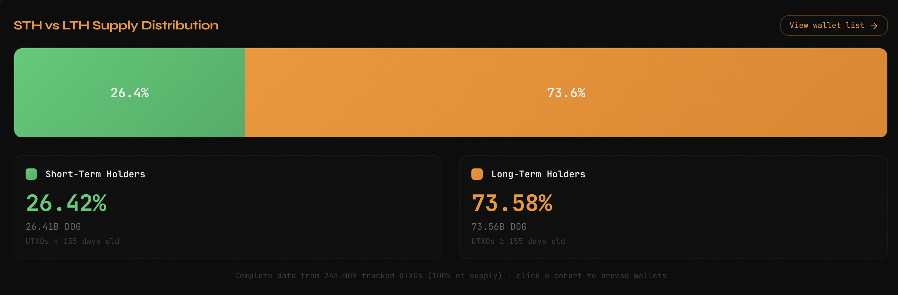
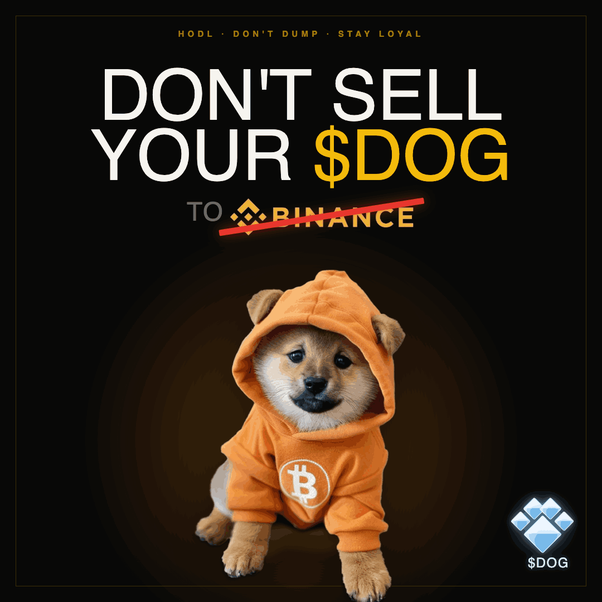
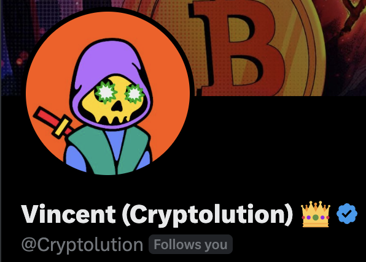

Real fair launch
Rune #3, 100B supply, closed mint, airdrop to Runestone holders, no presale and no privileged team allocation.
Every day we track short-term holders, long-term holders, key wallets, and exchange order books. The story gets simple when data comes before opinion.

$DOG has a strong narrative because it was born in a rare way: no presale, no team allocation, no owner. Our job is to prove what's provable, flag what's still a hypothesis, and drop what doesn't hold up.
$DOG is a Bitcoin meme coin with an open origin and a resilient community. The research shows where conviction appears on-chain, where the market is thin, and which exchange behaviors deserve public scrutiny.
To understand DOG, you first understand how the idea of creating art and coins inside Bitcoin itself was born. It all starts with Casey Rodarmor.
DOG (DOG•GO•TO•THE•MOON) wasn't born as a VC token, a presale, or a private promise. It was born as a Rune on Bitcoin, with open supply, airdrop distribution, and a simple cultural identity: a community holding an asset anyone can audit on-chain.
Casey expanded what Bitcoin could be. Artists, creators, and communities began to see the network as a layer for culture and digital ownership too. DOG is Rune #3, one of the first coins of this new cycle.
A soft fork that increased the data space in the transaction witness. Without it, nothing that came after would exist.
The protocol that lets you inscribe data onto individual satoshis (images, text, art) directly on Bitcoin's base layer, using the Taproot witness. For the first time you can immortalize something on the most secure blockchain of all, with no external layer. Source
An anonymous developer known as domo created a fungible-token standard on top of inscriptions. The first token was ordi. It worked and exploded. The problem is that BRC-20 is famously inefficient, even by domo's own admission. Each operation becomes a separate inscription, and the transfer model clogs the network with unspendable UTXOs — the infamous bloat. It was tokenization inside Bitcoin, but the dirty way. Source
In November 2023 Binance listed ORDI with no listing fee, and the price doubled within hours. The read: exchanges saw what this opens up. If Bitcoin becomes an asset layer, that market could get huge — and they want to be at the door first. Source
Casey came back and fixed the BRC-20 mess. Runes use the UTXO model plus the OP_RETURN opcode to create tokens without generating junk UTXOs — the source of BRC-20's bloat. It's tokenization inside Bitcoin, but the clean way. Source
Etched in the halving block (840,000), at the most symbolic moment. It was 100% distributed to those who contributed to the network: participants earned the Runestone, and Runestone holders received the DOG airdrop (around 75,000 wallets). No presale, no team, no owner, with a CC0 license. The biggest Bitcoin meme coin was born from the cleanest protocol. Article · View on-chain
There's a proposal, led by Luke Dashjr and the Bitcoin Knots camp, to limit non-monetary data on Bitcoin: re-impose a small OP_RETURN cap and restrict the script tricks inscriptions use. The explicit targets are Ordinals and Runes. One side sees this as censorship: if you pay the fees, the use of the space is yours, and restricting content at the protocol level harms Bitcoin's neutrality. The other side calls it anti-spam and wants Bitcoin to be money only. In practice, miners are mostly against it because they lose fee revenue, Adam Back denied it's censorship, and signaling is far from the needed threshold. Our read: trying to censor what free people choose to immortalize, in a system built precisely to be permissionless, goes against Bitcoin's own DNA. Source
The research is organized by confidence level. That keeps the conversation professional: good for the community, press, curious investors, and devs who want to audit the data.
Rune #3, 100B supply, closed mint, airdrop to Runestone holders, no presale and no privileged team allocation.
On Jun 28, DogData shows 73.61% of supply as LTH and about 60% dormant for over a year. The recent LTH drop is the whale that consolidated on Jun 25 resetting UTXO ages (they count as STH on paper), not selling. The correct method is by UTXO.
A new wallet received about 12.32% of supply on Jun 25. The origin points to an already-traced cluster; the nominal identity remains unknown.
Wallets like MM2 and Whale7 sign inputs together — a technical sign of common control. There are patterns consistent with wash trading in the cluster.
Low daily volume against the market cap and shallow depth near the price. On some venues, a few thousand dollars move the quote.
We don't claim nominal authorship, intent, crime, or price prediction. The research separates public data from narrative.
The project's credibility comes from reproducibility. Each step uses a public source: DogData for supply and holders, mempool.space for wallets, and exchange endpoints for order books.
Measure holders and UTXO age. Confirm LTH, STH, median age, supply in loss, and concentration.
Source: DOG DATA, UTXO-age and concentration metrics.Trace wallets and co-spends. Addresses that sign inputs together indicate common control, with documented technical caveats.
Source: mempool.space/api/address/<address>/txs.Watch the order books. Capture serial snapshots to tell real liquidity from walls that appear and vanish without executing.
Source: public endpoints listed in the Phase 3 document.Transparency is showing what we look at. Click any address to check it on mempool.space. Exchange labels are confirmed by public address; the cluster is tied together by co-spending (the same person signing together = the same owner).
The flow is an on-chain fact; "whose exchange it is" is community attribution; movement ≠ ownership; intent is not confirmed. Living list: it grows as new wallets enter the radar.
The sovereignty thesis gets easy to explain when it becomes an image: if DOG was born on Bitcoin, the way most aligned with its culture is keeping it in the holder's hands, not in an exchange account.

The responsible read is simple: an exchange is a place to enter and exit; a long-term thesis pairs with self-custody, on-chain verification, and education. The image can appear in landing materials when the topic is community, conviction, and pulling coins off the CEXs.
Important: this does not accuse any exchange of a crime, does not recommend buying or selling, and does not coordinate the market. It's a piece of culture in favor of the holder and self-custody.
The research grows with public sources, independent analysts, and more people from the DOG community verifying the same data. DOG DATA provides Ordinals data, especially for DOG, and Vincent — known as Cryptolution — helped open the forensic map of the wallets.
The data source for Ordinals, with a special focus on DOG. It organizes holders, markets, float, UTXO age, and concentration so the thesis can be verified with numbers.
Open DOG DATA
On-chain forensic analyst, with over 720 videos about DOG. His public reads of wallets and clusters helped kick off an investigation that anyone can now review.
See @Cryptolution on XWe need more DOGs investigating together: reviewing wallets, checking data, translating findings, and demanding transparency with evidence. The more independent eyes, the stronger the thesis.
Map clusters, review co-spends, and improve the method for separating exchange, market maker, and sovereign holder.
Run CEX monitors, compare reported volume with on-chain flow, and document signs of spoofing and layering.
Turn technical findings into threads, slides, charts, and institutional copy without losing precision.
Help keep the project to a responsible standard: reproducible facts, no accusation without proof, and no price coordination.
The landing is the front door. The files below hold the detail: research, forensics, endpoints, script, and the consolidated report.
A direct guide for newcomers, and for any AI that wants to answer about DOG based on facts and sources.
The natural path is to move from a nice page to a trustworthy research infrastructure: versioned data, public scripts, reviews, and recurring publications.
Checking should be simple for anyone. Instead of trusting the landing, open the public sources and check the data directly.
With open data, clear language, and the right contributors, $DOG stops being a narrative fight and becomes a verifiable case.